Water Level Monitoring and Control PCB
Designed a custom ESP32-based PCB to monitor water level and control pump or valve behavior, with LCD output, buzzer, LEDs, and relay integration for operational feedback.
 Hossam Mamdouh
Hossam Mamdouh
Portfolio
These examples are based on the public project and profile details available from my freelance profiles. They show the range of systems I build, from PCB-level control boards to connected monitoring devices.
Designed a custom ESP32-based PCB to monitor water level and control pump or valve behavior, with LCD output, buzzer, LEDs, and relay integration for operational feedback.

Developed a Real-time ECG monitoring setup using ESP32 and AD8232 to capture bio-signals and support remote observation and future connected-health workflows.
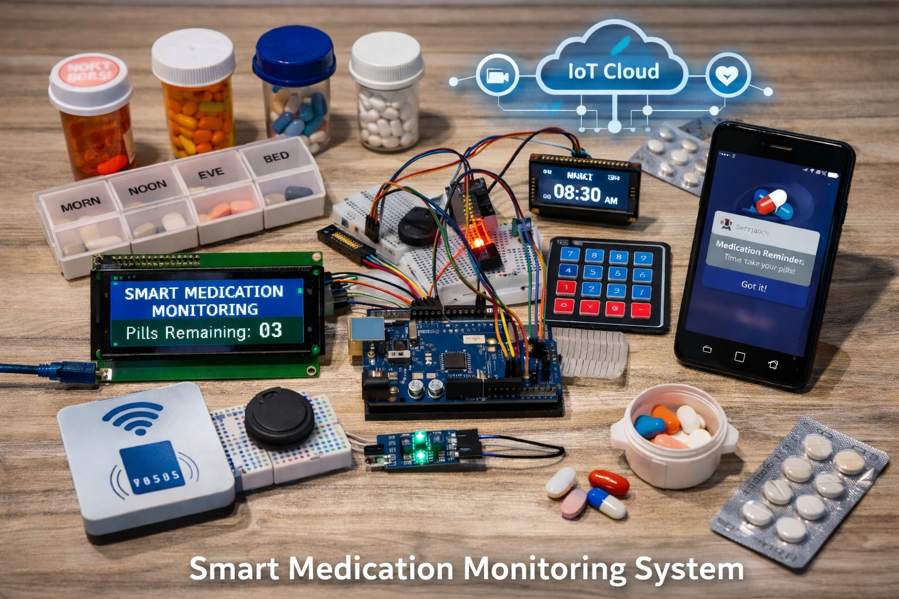
I designed and implemented a Medication Monitoring System (Smart Pill Box) to help elderly people and patients adhere to their medication schedules reliably and safely. The system includes an Arduino Uno WiFi microcontroller, integrated sensors to detect pill removal, Servo motors for pill dispensing, and a user-friendly interface for real-time monitoring and alerts.

Combined a glove-mounted accelerometer, Arduino Pro Mini, RF communication, L298N motor driving, and ultrasonic sensing to create a gesture-based assistive control vehicle.
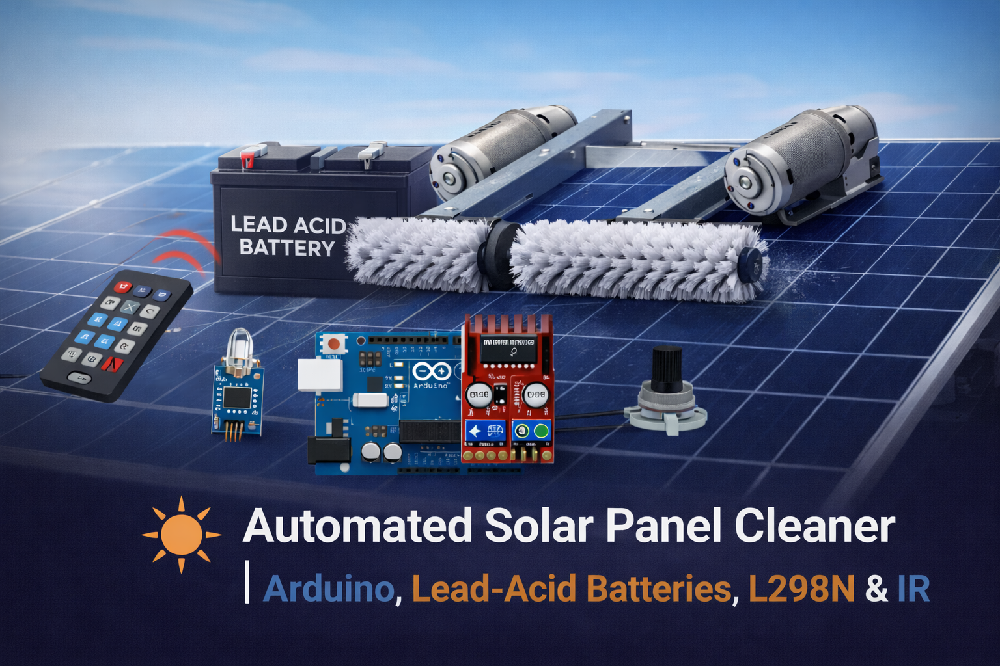
I designed and implemented an Automated Solar Panel Cleaner System to improve solar panel efficiency by removing dust and debris without manual intervention. The system is built using an Arduino Uno, DC motors, and an L298N motor driver, and is controlled remotely using an IR transceiver.
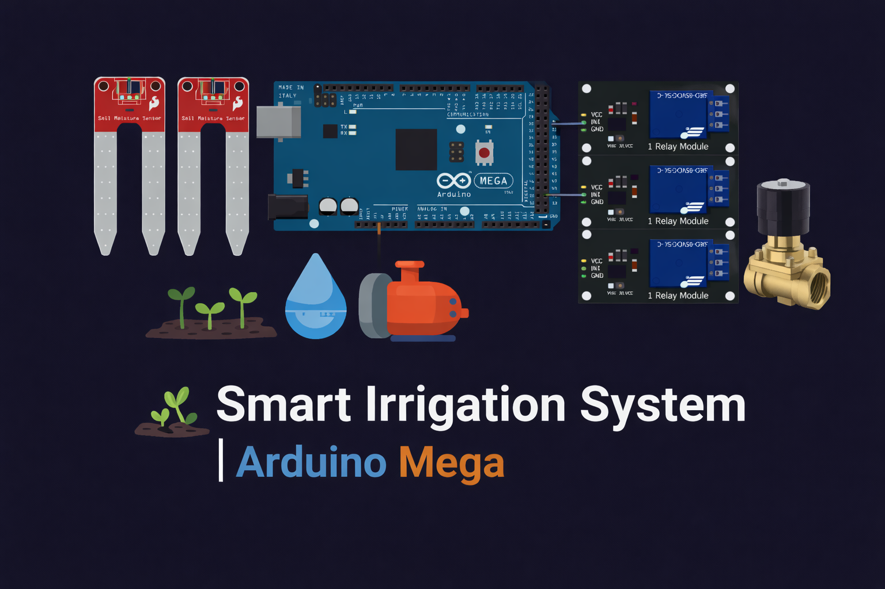
I designed and implemented a Smart Irrigation System that automates watering based on real-time soil moisture levels, reducing water waste and improving irrigation efficiency.
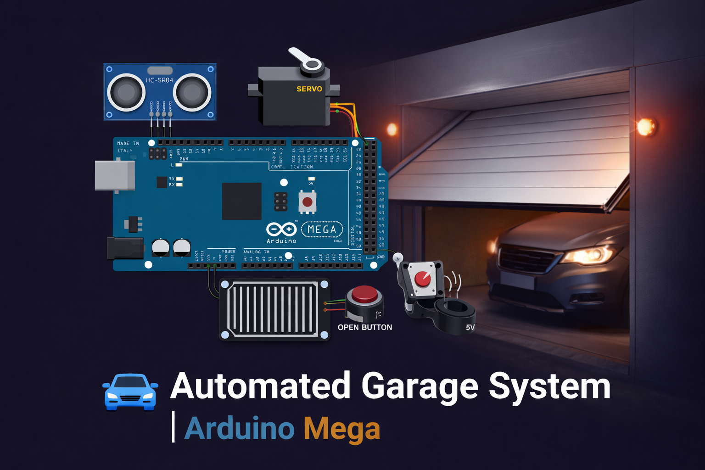
Built an Automated Garage System that simplifies and automates the process of vehicle parking and retrieval using embedded systems and sensors.
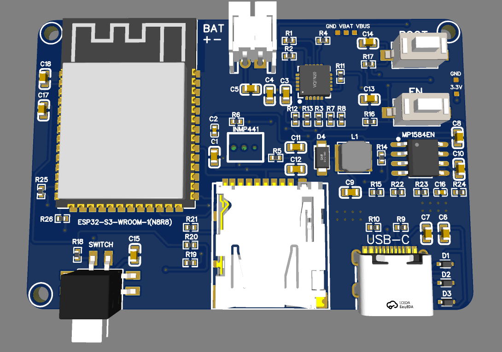
Designed a MicroSD Audio Board for high-quality audio playback and storage, incorporating efficient PCB layout and audio signal processing.
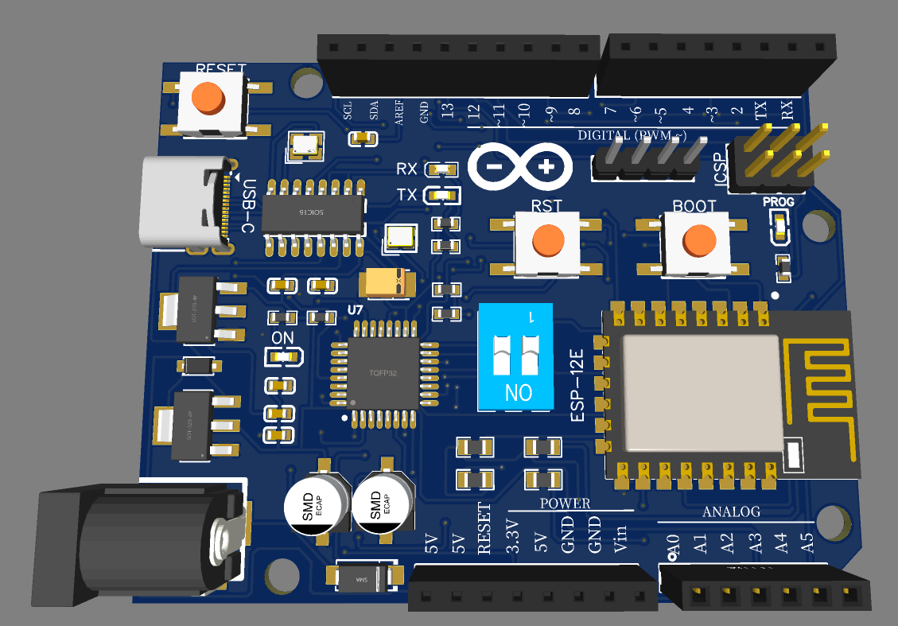
Integrated an ESP-12E WiFi module with an Arduino Uno to enable wireless communication capabilities for various IoT applications.
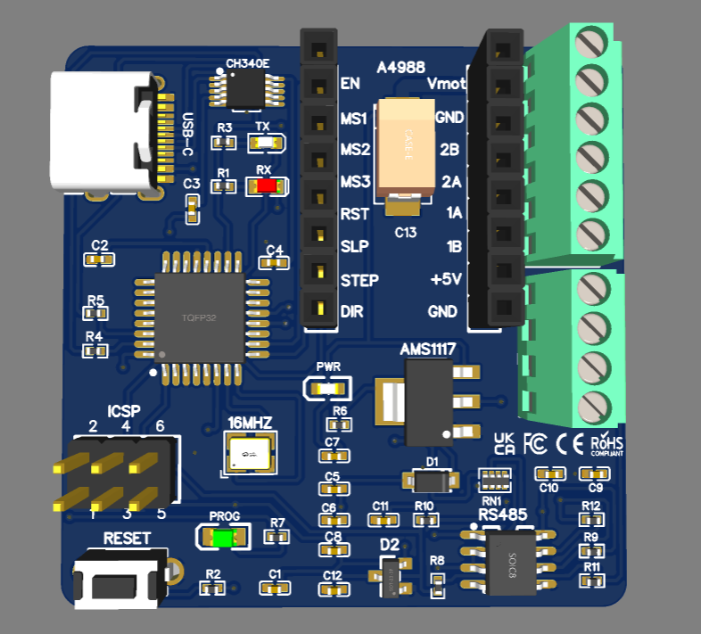
Designed a conveyor system with a stepper motor-driven arm for precise object handling and sorting, incorporating control logic for efficient operation.
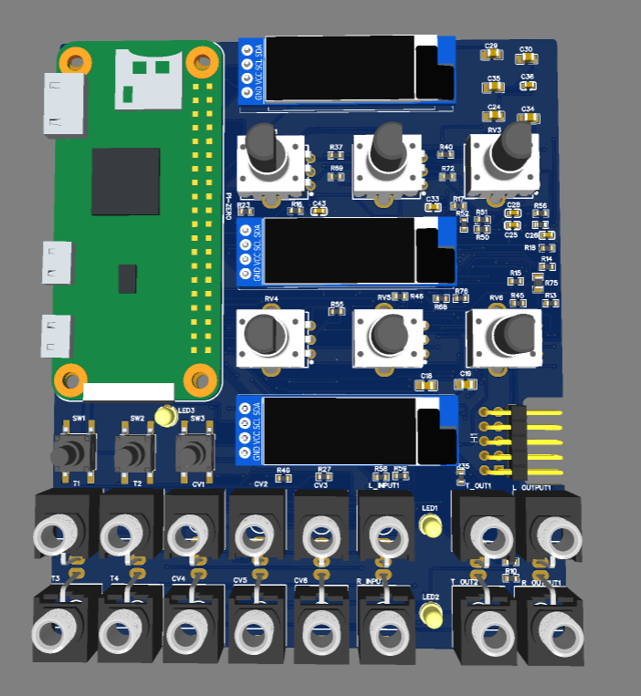
Audio mixer and effects board with audio playback, potentiometer controls, and a custom PCB for compact and efficient design.
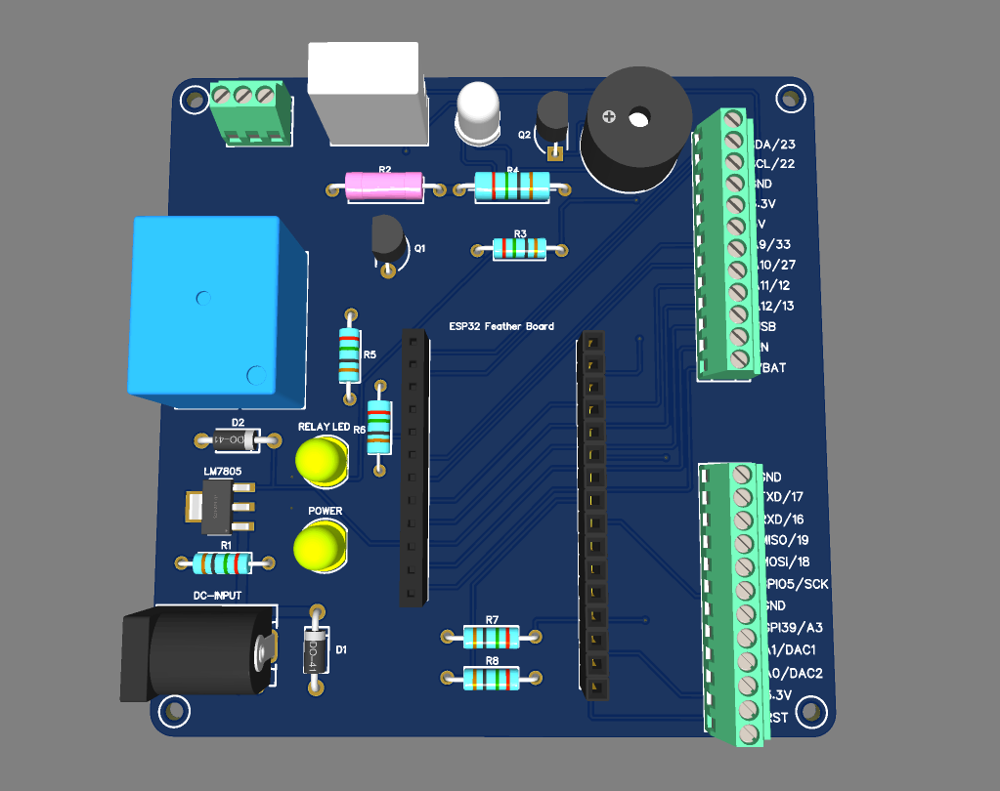
Developed an ESP32-based temperature controller for precise climate management, featuring real-time monitoring and automated adjustments.
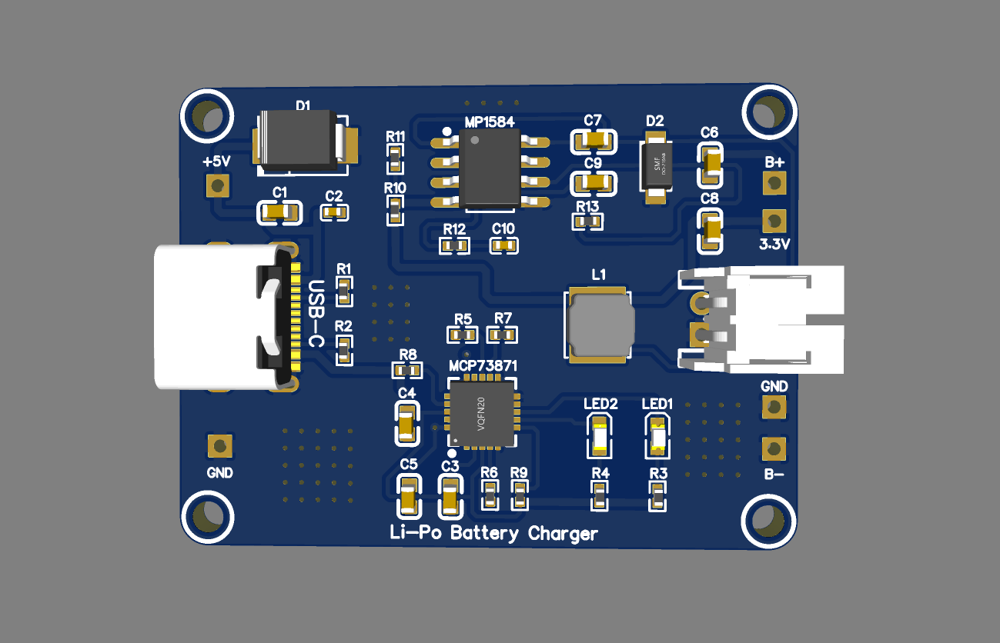
Designed a LiPo battery charger with efficient charging circuitry, safety features, and a custom PCB for compact and reliable operation.
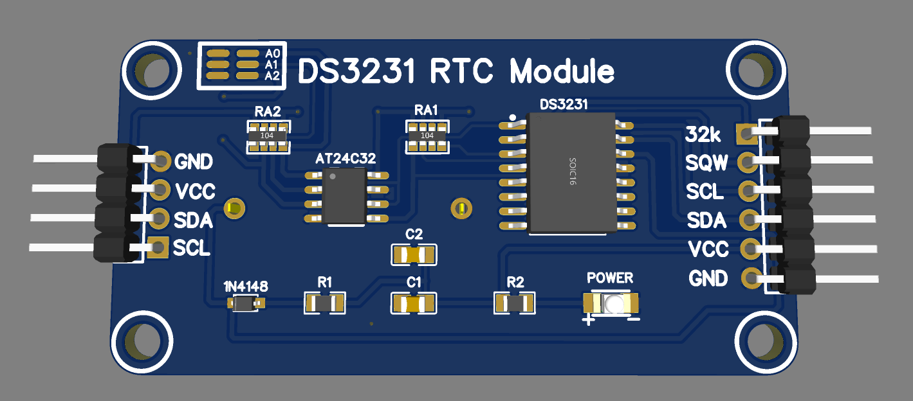
Designed a DS3231 RTC module for accurate timekeeping in embedded systems, featuring a custom PCB for reliable performance.
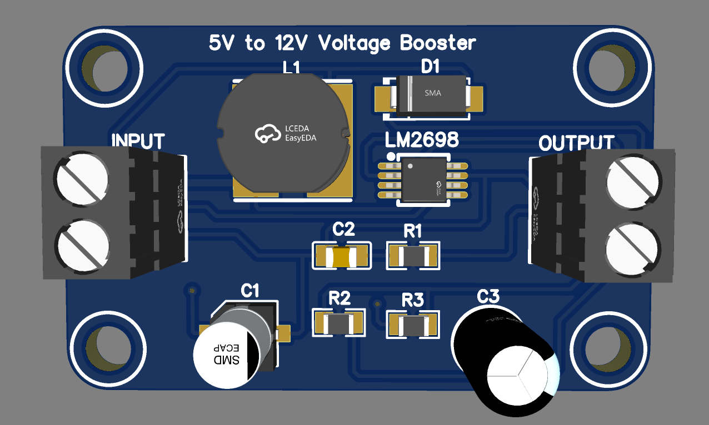
Designed a 5V to 12V voltage booster with efficient power conversion, safety features, and a custom PCB for reliable operation.